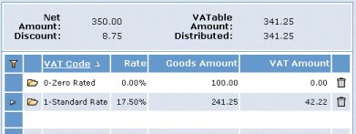

Using Multiple Codes in a Transaction Entry
If items on an invoice require more than one code, for example, if the standard rate applies to one item and no will be applied to another item, you may enter a separate distribution.
Leave the field (on the main invoice detail screen) blank; displays the tab.

Enter the code, the net cost of the goods and the amount (if it is different from the amount calculates). You may use as many different codes as required but you must ensure that the total Goods Amount correctly matches the able Amount.